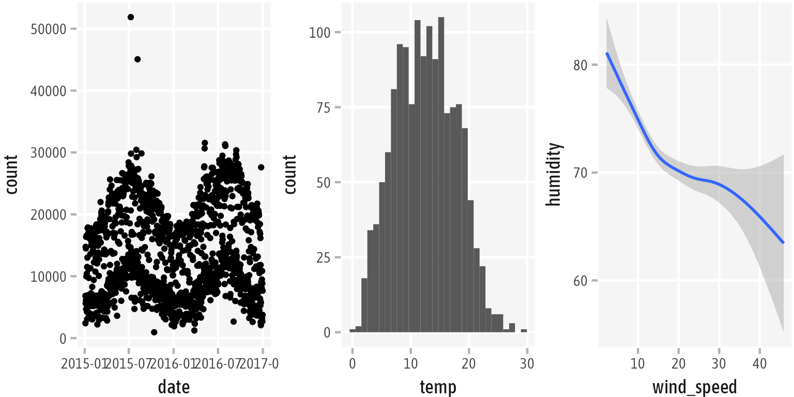
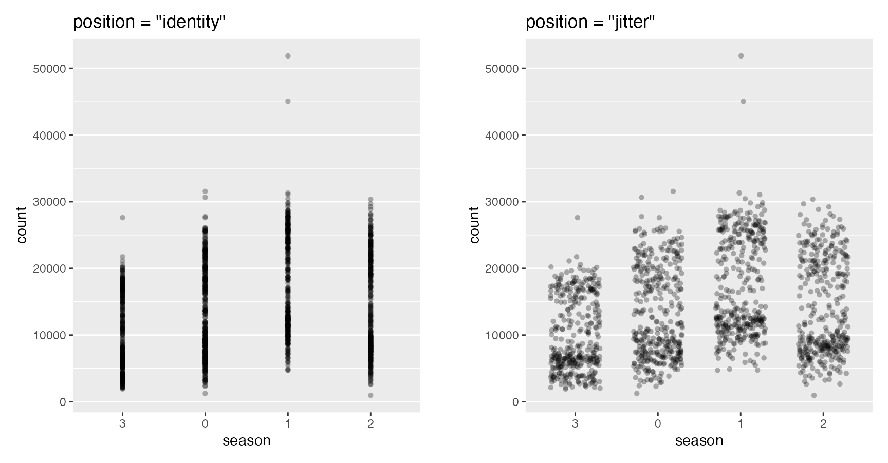
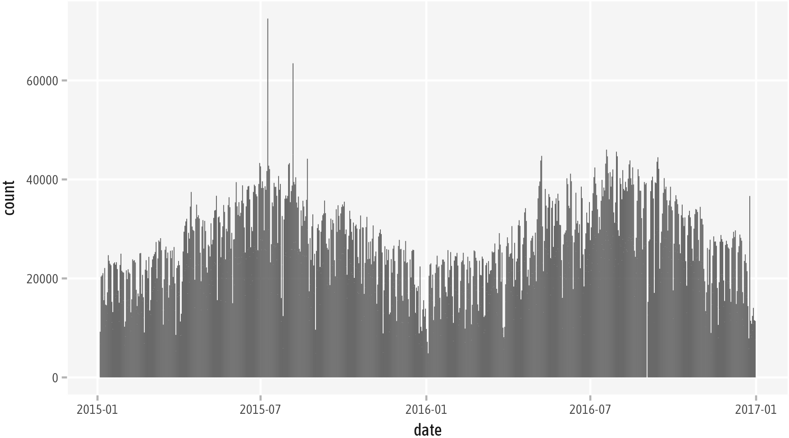

Chapter 7 Working with Layers
Internally all layers are created by the layer() function. A layer is by definition a “combination of data, stat and geom with a potential position adjustment” (layer R help).
ggplot(bikes, aes(x = temp, y = count)) +
layer(geom = "point", stat = "identity", position = "identity")
7.1 Layer Defaults
The long list of featured geom_*() and stat_*() functions in ggplot2 is thus just a set of predefined layers with default geom, stat, position arguments that use the data passed in the initial ggplot() call. The data can also be specified for each layer separately by passing it inside the respective geom or stat.
The following codes produce the same output as the layer() function above, a scatter plot of counts over time:
ggplot(bikes, aes(x = temp, y = count)) +
geom_point() ## with defaults `stat = "identity", position = "identity"`
ggplot(bikes, aes(x = temp, y = count)) +
stat_identity() ## with defaults `geom = "point", position = "identity"`All layers follow the same approach with both, geom_* and stat_* defaults such as binned bars to create histograms via geom_histogram() or stat_histogram(), both with the defaults geom = "bar", stat = "bin", and position = "identity".
ggplot(bikes, aes(x = temp)) + geom_histogram()
ggplot(bikes, aes(x = temp)) + stat_bin()For all geometries and statistical transformation there is a respective geom_* and stat_* with reasonable defaults. For example, geom_bar() or stat_count() both produce bar charts with the height encoding the count per variable:
ggplot(bikes, aes(x = weather_type, fill = year)) + geom_bar() ## with default `stat = "count"`
ggplot(bikes, aes(x = weather_type, fill = year)) + stat_count() ## with default `geom = "bar"`Maybe you have wondered at some point, why you can use geom_smooth() and stat_smooth() interchangeably to create a conditional smoothing? This is because both call the same underlying layer function with the default arguments geom = "smooth", stat = "smooth" and position = "identity".
ggplot(bikes, aes(x = temp, y = humidity)) + geom_smooth()
ggplot(bikes, aes(x = temp, y = humidity)) + stat_smooth()
We can overwrite the defaults and change the behavior of the layer:
ggplot(bikes, aes(x = wind_speed, y = humidity)) +
stat_smooth() ## with default `geom = "smooth"`
ggplot(bikes, aes(x = wind_speed, y = humidity)) +
stat_smooth(geom = "pointrange")
7.2 Geometrical Shapes
Many geometrical shapes only need two positional arguments, namely x and y as a single coordinate is sufficient to represent your data. A combination of x and y values determine the position of points, connected lines, or the height of bars.
ggplot(bikes, aes(x = date, y = count)) +
geom_line() ## a timeseries of bike shares per date
ggplot(bikes, aes(x = date, y = count)) +
geom_col() ## a bar chart with one bar per date
[WIP]
- most geoms use two positional aesthetics
- showcase a few of those
- some geoms take only one or more than 2
- showcase of some of those